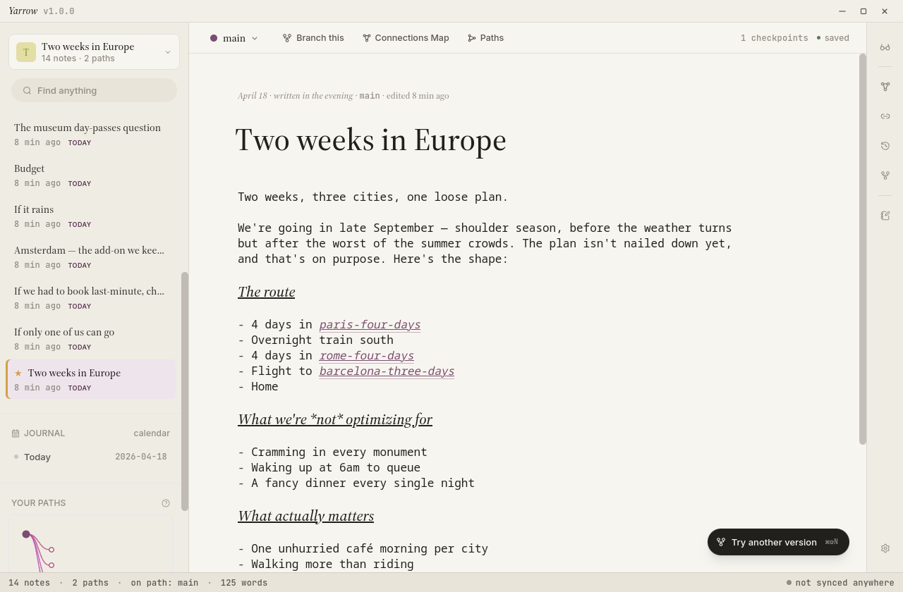
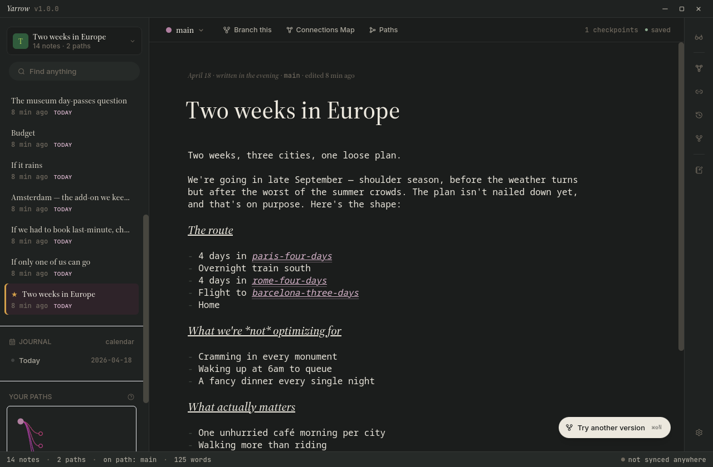

Everything Yarrow does, explained from scratch.
Welcome! This guide is for everyone — whether you've never used a notes app before, or you're already comfortable with computers and want to dig into the details. Read it from top to bottom if you're new, or use the menu on the left to jump to whatever you're curious about. If you just updated to 2.1, the New in 2.1 section up top sums up what's different — kits, a research workflow, a privacy-first clinical surface, optional folders, three UI languages, and a much snappier feel.
About the keys we mention. Mac uses the ⌘ (Command) key; Windows and Linux use Ctrl. We'll write ⌘K throughout the guide — on a PC just use Ctrl+K instead.
What Yarrow is
Yarrow is a desktop notebook for the kind of thinking that doesn't sit still. You write in plain text, you link your ideas to each other, and any time you want to try something a different way, you can branch off into a path — a parallel "what if I went this direction instead?" version of your notes that sits alongside the original. Nothing you write is ever lost; every pause becomes a checkpoint you can scroll back to.
You don't need to be a programmer or know any special tools to use it. There's no syntax to memorize, no app to learn, no account to make.
Your notes are just files
Each note is a plain text file in a folder you pick. You can open them in any other app — TextEdit, Notepad, Word — or copy them anywhere. Yarrow doesn't lock them up.
Lives on your computer
Everything runs on your machine. No account, no sign-up, no internet required. If you want a backup or to use Yarrow on two computers, you can — but only if you choose to.
Remembers everything
Yarrow saves every pause as a tiny snapshot, so you can always scroll back to an older version of a note. Try a different angle on something? Branch into a path; the original waits for you.
Six new directions in 2.2
2.2 is mostly an interaction-design release. The radial right-click menu's centre dot — the "Still Point" — is now configurable; the right-click action set is reorganised around Inserts… and Format… modals; Compare can finally diff two individual notes; the editor gains a side-by-side live preview; and there's an opt-in Cooking additions extra that bundles everything a baker would want without imposing it on everyone else. Plus a serious macOS polish pass. Everything from 2.1 still works exactly the same.
Still Point gestures
Settings → Gestures binds tap, press-and-hold, and double-tap on the radial centre dot to any of twelve actions. Defaults: tap → palette · hold → Quick Hand modal · double-tap → focus mode.
Compare two notes
Open Compare and you'll land in Notes mode by default — pick two notes by title and you get a side-by-side diff. The original Paths mode is still there behind a toggle.
Live-preview split
⌘K → "Toggle live preview" splits the editor in two — writing on the left, fully-rendered markdown on the right, updated on every keystroke.
Outline panel
The right rail gains an outline icon. Click it for a tree of headings + top-level bullets in the active note; click any entry to jump to that line.
Cooking additions
Settings → Writing → Writing extras → "Cooking additions". When on, you get five baking kits, a recipe URL clipper, inline [label](timer:25m) timers with a corner pill, cook mode (big text + screen wake-lock), and a smart shopping list. Off by default — most users aren't here for baking.
macOS polish
Native menu bar (File / Edit / View / Window), acceptFirstMouse, native overlay scrollbars, prefers-reduced-motion respected. Yarrow now feels properly Mac-native on Tahoe / Sequoia / Sonoma.
Six new directions in 2.1
2.1 is the workflow + warmth release. There's a much bigger set of starter kits, a research-focused workflow with BibTeX import, a privacy-first clinical surface, optional sidebar folders, three UI languages, and a substantial responsiveness pass that makes the whole app feel snappier on every platform. Everything from 2.0 still works exactly the same — these are additive.
Kits
75 curated note skeletons across nine categories — Journal, Research, Clinical, Work, Learning, Writing, Everyday, Decision, Spiritual. Each one is a small markdown scaffold you can start a note from.
Research workflow
Type @ to insert a wikilink to one of your paper-cards. Import a .bib file from Zotero or BibDesk and Yarrow turns each entry into a paper-card note ready to cite.
Clinical workflow
Mark a note as private and Yarrow keeps it on your machine, full stop — never committed, never synced. An on-device PHI scanner gently flags possible identifiers as you type.
Folders
Optional sidebar grouping. Move any note into a named folder; the folder shows up at the top of your sidebar. Pure metadata — the file always stays right where it lives.
Languages
The whole interface now reads in English, Latin American Spanish, or Swedish. Switch from Settings → Appearance, or right at the welcome screen if you haven't opened a workspace yet.
Responsiveness
Scrolling, modal opens, hover state changes — everything feels meaningfully smoother. A long pass on the rendering pipeline cut Yarrow's per-frame cost across the board, especially on Linux.
Seven ways Yarrow now sits under your hands
If you just updated, this is the short version: seven new things, each with its own tiny illustration so you can see what they do before you turn them on. (There's also a whole bunch more — callouts, tables, the connect-mode map, path colours, imports from Bear / Logseq / Notion — covered in the relevant sections later.) Everything old still works the same.
Typewriter mode
Normally, when you write a long note, your eyes drift down the page as you go — by the end of an hour you're hunched over reading the bottom third of the screen. Typewriter mode fixes that. Whatever line your cursor is on, Yarrow keeps it at the vertical middle of the editor; the page scrolls underneath you, not your gaze.
Turn it on: ⌘, to open Settings → Writing → toggle Typewriter mode. You can flip it off anytime.
A small thing, but it's the difference between a long writing session feeling like writing and feeling like a neck exercise.
Margin ink — annotate without editing
There's a kind of thinking that's about your writing — "this line is the thesis", "maybe cut this", "keep as-is, restraint is the point". It doesn't belong in the body of the note. It isn't a separate note either. For decades, the answer has been sticky notes on paper. For Yarrow 2.0, it's margin ink.
- Select a word or phrase in the body of your note.
- Right-click it and pick Annotate from the menu.
- A card appears in a right-hand gutter, anchored to what you selected. Type your thought. It saves automatically when you click away.
Click any card later to edit it; clear its text and click away to delete it. The anchor excerpt at the top of each card reminds you what it's about — useful when you scroll far from the original phrase.
Annotations live in the note's plain-text header, so any other markdown tool that reads the file will see them and pass them through untouched. Exporting to HTML keeps them in the file, even though we don't render them in the exported site.
Editorial reading mode
When you open a note in reading mode, it now comes with the same typographic care a magazine would give a finished article — a drop cap on the first paragraph, more generous line spacing, and pull quotes you can promote from any blockquote.
Making a pull quote
Write a normal markdown blockquote, but prefix the line with
pull:. That's it.
> pull: I have been a writer since I could hold a pencil.
In editorial reading mode, that blockquote becomes a real
oversize pull quote. Without the pull: prefix it
renders as a normal quote.
Turning it on and off
At the top of any note, while in reading mode, you'll see a small editorial / plain toggle — click to switch between magazine-style and the simpler plain renderer. Your choice applies to every note you open; toggle any time. You can also set the default under Settings → Writing.
Path-tinted caret
When you branch into a side path to try a different version of a note, your blinking cursor takes on that path's colour. You always know at a glance which draft you're editing — no need to check the path pill in the toolbar. Ambient information, nothing to read.
Assigning a colour to a path: open the Paths view (⌘K → Paths), click into any path, pick a colour from the swatch at the top of the detail panel. If you don't, Yarrow derives a calm hue from the path's name automatically — so you get the feature for free.
Turning it off: if you prefer the default high-contrast caret (for readability or screen-reader use), toggle Path-tinted caret off under Settings → Writing. It stays on by default because most people find it helpful.
Where you left off
Coming back to a note after a break is a small cost every time — you have to remember what you were thinking, which path you were on, which sentence you were in the middle of.
When you reopen a workspace you used in the last three days, Yarrow shows a one-line banner above the editor: the note you paused in, the path you were on, and the line you were at last. Three buttons, nothing complicated:
- pick up here → jumps to that note on that path, right where you were.
- start somewhere else hides the banner for this session, without touching your bookmark.
- hide next time turns the banner off forever for this workspace.
After three days without touching a workspace, the bookmark quietly expires — so if you come back to an old workspace a month later, you aren't greeted with stale context from something you've already moved past.
Pinned keepsakes — versions you want to keep forever
Yarrow's deal has always been "nothing you write is ever lost." But over a long time, a single note might have a thousand tiny saves behind it — and if you ever tidy up (say, prune checkpoints older than six months), the normal rules apply: old ones go away.
Keepsakes are the exception. They're the checkpoints you've explicitly told Yarrow to keep, with a little note to your future self about why.
Pinning a checkpoint
- Open the note, then open History (the little clock icon in the right rail, or ⌘K → Show history).
- Click a checkpoint in the timeline to preview it.
- At the bottom of the preview panel, click ☆ pin this.
- Give it a short label ("before the prologue cut", "v1 cold read") and, if you want, a longer note about why it mattered.
- Done. It now has a kept badge next to it in the timeline, and will never be touched by pruning.
Unpinning
Select the pinned checkpoint in History and click ★ unpin. The version is still there — it's just no longer protected, and will be fair game for the next history prune if you choose to run one.
Technical detail for the curious: behind the scenes, each
keepsake is a git ref pointing to that version, stored at
.git/refs/yarrow/keepsakes/<id>. That ref is
what keeps git from ever garbage-collecting the object. The
human-readable metadata (label, note, when you pinned it)
lives in .yarrow/keepsakes.json.
Installing Yarrow
Head to the downloads page and pick the file for your computer. Yarrow is small — about 15 MB — and won't slow your machine down.
Mac
Download the .dmg, open it, and drag the Yarrow icon into Applications. Because Yarrow isn't yet signed with Apple, you'll need to take one extra step the first time you launch it — see macOS, in detail just below for the friendly walk-through.
Linux
Three options: the AppImage works on any Linux without installing anything (just make it executable and double-click); the .deb is for Ubuntu, Debian, and similar; the .rpm is for Fedora, RHEL, and openSUSE. The installer takes care of any system bits Yarrow needs.
Windows
Run the .msi installer to install Yarrow normally, or use the portable .exe if you want to run it without installing. Windows 11 has everything Yarrow needs built in; older versions may ask you to install one small Microsoft component.
macOS, in detail
First the reassuring part: Yarrow is safe. The
whole app is open source on
GitHub,
and the .dmg on the
downloads page
is built straight from the same code by GitHub's own
servers — not uploaded by hand. Anyone can read what's inside
before they install it. Your notes never leave your machine
unless you set up Sync yourself.
Now the slightly inconvenient part: macOS will warn you when you first open Yarrow, because we're not yet a paid Apple Developer. This is a one-time thing — every small open-source Mac app you've ever installed went through the same dance. Apple's warning isn't saying Yarrow is bad; it's saying "this came from outside the App Store and we haven't seen it before." Once you click through, macOS remembers your choice and never asks again.
Why isn't Yarrow signed?
Apple charges $99/year for the developer membership that lets a small app get a "trusted" stamp on macOS. Yarrow is free and open source, with no subscriptions or accounts; we'd rather keep it that way than pass that cost along. If Yarrow ever charges for something, signing the macOS build will be the first thing we use the money on.
The three-step open
Here's exactly what you'll do the first time. After this, Yarrow opens like any other app — by double-click, from the Dock, from Spotlight, anywhere.
- Open the .dmg and drag Yarrow into Applications. A Finder window opens with the Yarrow icon and a shortcut to your Applications folder; drag the icon onto the shortcut and let go. Eject the .dmg afterwards (control-click → Eject) so it doesn't sit on your desktop forever.
- Open Applications, then control-click Yarrow. Either right-click or hold Control and click the Yarrow icon. From the menu that pops up, pick Open. (This step is the magic — going through control-click + Open is what tells macOS "yes, I deliberately chose this app." Just double-clicking would show the warning with no obvious way past it.)
- Click "Open" in the warning. A small window appears that says something like "macOS cannot verify the developer of Yarrow. Are you sure you want to open it?" Click Open. Yarrow launches, and macOS marks it as trusted from now on — every future launch is just a normal double-click.
If you don't see "Open" in the warning — only a "Done" or "Move to Trash" — close it, then open System Settings → Privacy & Security, scroll down, and you'll see a line near the bottom that says "Yarrow was blocked from use because it is not from an identified developer." Click Open Anyway next to it. Then go back and double-click Yarrow normally. (Apple changed the wording of these dialogs around macOS Sequoia; the underlying step is the same.)
Verifying the download (optional, for the curious)
Every release on GitHub publishes a SHA-256 checksum next to each download. If you want to confirm the .dmg you downloaded matches the one we built, open Terminal, navigate to your Downloads folder, and run:
shasum -a 256 Yarrow_2.1.0_universal.dmg
Compare the long hex string it prints to the
.dmg.sha256 value listed on the release page. If
they match, the file you have is byte-for-byte the file we
published. If they don't match, don't open it — let us know.
Removing Yarrow
Drag Yarrow from Applications to the Trash, then empty the
Trash. Your notes — which Yarrow keeps in whatever folder you
chose, never inside the app itself — are completely
untouched. If you also want to clear Yarrow's small preference
file (the recent-workspaces list, theme choice, font picks),
delete ~/Library/Preferences/com.yarrow.desktop.plist.
Your first workspace
A workspace is just a folder full of notes. You can have as many workspaces as you want — one for personal stuff, one for work, one for a school project — and they don't share anything. Switching between them is fast and clean.
The first time you open Yarrow, you'll see a welcome screen with two big buttons. Click Create a new workspace and a small wizard walks you through it.
The two flavors
Step 2 also asks how you want to use this workspace:
- Branch path mapping (recommended) — the full Yarrow experience. Notes can link to each other, you can branch into paths, and a beautiful map shows how your ideas connect.
- Basic notes — a simple notebook with no extra moving parts. Just notes and folders, like a plain text journal. Pick this if you only want to jot things down.
You can switch flavors later from Settings → Workspace, and you won't lose any notes either way.
Your first note
Press ⌘N (or Ctrl+N) to start a new note. A small box appears asking for a title — type something like "Grocery list" or "Book ideas" and hit Enter. The editor opens, and you can start writing right away.
You'll never see a "save" button in Yarrow. About three seconds after you stop typing, your work is quietly saved. A faint saved pulse near the top tells you it landed. If you ever want to see an older version, you can — Yarrow keeps every version of every note, forever.
To delete a note, right-click it in the sidebar and pick Delete. Don't worry about clicking the wrong thing — deleted notes go to the Trash (bottom of the sidebar), where you can pull them back any time.
The editor at a glance
Open Yarrow and you'll see four regions. Don't worry about memorizing them — pretty much everything is one click away from wherever you are.


-
1
The sidebar on the left is your shelf. Every note you've written lives here. The ★ on one of them marks your workspace's "starting" note — the heart of your collection. Below it you'll find your journal entries, your paths (more on those later), and a button for the scratchpad and the trash.
-
2
The top strip tells you which path you're on (it'll usually say main, which is the trunk), and gives you one-click buttons for branching off into a new direction, opening the connections map, and the full paths view.
-
3
The editor is where you write. There's no save button — Yarrow saves silently a few seconds after each pause, so you can just focus on the words. Click the big title at the top to rename the note.
-
4
The tool-rail on the right is a tiny column of icons. From top to bottom: flip between writing and reading mode, see the connections map, see what links to this note, scrub the timeline, open the paths view, scratchpad, and settings. Hover any icon for its name.
New in 2.0: the editor has a new posture option — Typewriter mode keeps the line you're writing centered on screen. You can also annotate the body in a right-hand gutter with Margin ink, and your cursor can wear the current path's colour via the Path-tinted caret.
Writing in markdown
Yarrow notes use a simple way of formatting called markdown. You don't have to learn it all — most people get by with two or three of these. Type any of these and Yarrow does the styling for you:
| You type | You get |
|---|---|
# Heading | A big heading |
## Smaller heading | A smaller heading |
**bold** | bold |
*italic* | italic |
- list item | A bullet list |
1. first | A numbered list |
> quote | A quoted paragraph |
`code` | inline code |
```python | A syntax-highlighted code block |
[link text](https://…) | A web link |
[[Other Note]] | A wikilink to another note |
$x^2$ / $$\int…$$ | Inline / block math |
?? something I'm unsure about | An open question (tracked) |
While you're actively writing on a line you'll see the symbols themselves (the asterisks, the dashes). Move your cursor away and they tuck out of sight, leaving clean reading text. Click back into a line to edit the markup.
Reading vs writing mode
The top icon on the right side of the window (a pair of glasses, or a pencil) lets you flip between two ways of looking at a note: writing mode, where you can edit, and reading mode, which lays the note out cleanly, like a printed page.
Reading mode is for reading — code blocks get a soft background, tables get tidy lines, quotes get a yellow accent bar, math equations render properly, and the links to other notes look like little colored pills you can click. Click switch to writing in the small line above the title to flip back to editing.
New in 2.0: reading mode now has an editorial treatment with drop caps, pull quotes, and generous line spacing — see Editorial reading mode.
Math & code
Math equations
If you write equations, you can wrap them in dollar signs and Yarrow will format them properly. One pair of dollars for an equation that flows in your sentence, two pairs for an equation that gets its own centered line:
The energy is $E = mc^2$.
$$
\int_0^\infty e^{-x^2}\,dx = \frac{\sqrt{\pi}}{2}
$$Click into the dollars to edit the equation; click somewhere else and it renders. (Yarrow uses standard LaTeX notation, the same thing math textbooks and academic papers use.)
Code samples
For programmers (and anyone keeping recipe-like step-by-step notes), wrap a chunk in three backticks and Yarrow will format it as code:
```python
def hello():
return "world"
```
Pop in a language name after the opening backticks (like
python, javascript, rust,
or bash) and Yarrow will color the keywords for
you. In reading mode, code blocks get their own boxed
background — easy to tell apart from the prose.
Pasting links
Copy a web address from anywhere — your browser, an email, a chat — and paste it into a Yarrow note. The address shows up right away, and a second later Yarrow swaps it for a tidy link with the page's actual title (so you don't have to type "BBC News article" yourself).
Want to use your own words for the link label? Highlight the text first, then paste the address — the highlighted text becomes the link, no title fetch needed.
Spell-check
Yarrow underlines misspelled words with a wavy red line as you write. Right-click any underlined word and you'll get a small list of suggested fixes — pick one to swap it in.
At the bottom of the suggestions you'll see Add to dictionary. Click it for words Yarrow doesn't know but should — names, places, terms specific to your work. Those words are remembered for this workspace, so if you share it with someone else they get your vocabulary too.
Pictures & files
To add a picture or any file to a note, drag it from your desktop right onto the note. Or copy a screenshot and paste it. Yarrow tucks the file safely inside your workspace and inserts a reference where your cursor is.
Pictures show up as actual previews inside the note — no clicking through. If a picture's missing (you moved it or renamed something), Yarrow shows a small red block where it should be, so you'll spot it.
[[Wikilinks]] — connecting notes by name
To link one note to another, type two square brackets
([[) anywhere. A little menu pops up showing every
note in your workspace; keep typing to narrow it down, then
press Enter to insert the link. Click the link
any time to jump to that note. (The two-square-brackets
idea comes from Wikipedia, where this style of "name-based"
linking started — that's why it's called a "wikilink".)
[[Paris]]. The pipe lets you display alternative text. The hash points at a heading inside the target note.Hover to peek
Hover the mouse over any link for a moment and a small preview appears with the linked note's title and the first few lines of what's inside. Move into the preview to keep it open and click a button to "start a path here" if you want to branch from that note.
Previews work both while you're writing and while you're reading.
Renaming a note other notes link to
Right-click a note in the sidebar to rename it. If other notes link to it, Yarrow will ask: do you want to update them all to the new name, or leave them pointing at the old one? Either choice is undoable from History.
Typed connections
A regular link just says "these two notes are related." Sometimes you want to say how they're related. Yarrow gives you four kinds:
- supports — this note backs up the other (an example, evidence, a quote)
- challenges — this note pushes back on the other (a counter-point, a contradicting fact)
- came from — this note is where the idea in the other one started
- open question — this note raises a question the other might answer
Click the chain-link icon on the right side of the window to open the Links panel for the note you're on. Search for the note you want to connect to, pick the type, and Yarrow makes the connection on both sides — so the other note knows it's being supported (or challenged, etc.) too.
Showing one note inside another
Sometimes you want one note to actually display the contents of another, not just link to it. (Useful for putting a key paragraph on a "summary" note while keeping it editable in its original home.) Just put an exclamation point before a normal link:
![[Paris]] ← show all of "Paris" inside this note
![[Paris#food]] ← show just the "food" heading from "Paris"
![[Paris^cafe-list]] ← show a specific paragraph from "Paris"The right side of the window has an "Embedded" panel that lists what's being pulled in. If a referenced note has been deleted, you'll see a red note so you can clean up.
Open questions — loose ends, tracked
While you're writing, you'll often have things you want to
figure out later. Start that line with two question marks
(??) and Yarrow will mark it for you:
?? do we need a car for the Loire?
Those questions get a wavy yellow underline, and they all
gather in the "Open Questions" panel on the right side of the
window. Click any one to jump back to it later. Once you've
answered it, just delete the ?? and it's done.
Pinned notes
Right-click any note → Pin to top. Pinned notes get their own subsection at the top of the sidebar with a small pin glyph. Useful for the handful of notes you live in.
The Connections Map
Click the Map icon on the tool-rail (or ⌘K → Open the map) for a force-directed graph of every note and the typed connections between them.
- Nearby / All toggle — start with 1–2 hops to keep the picture readable; switch to All when you want the whole network.
- Open per path — from any path's detail panel, click Open the map for this path to filter the graph to only that path's notes.
- Expand — the maximize icon opens the map full-screen.
Paths — the big idea
A path is Yarrow's word for a different version of your notes. Every workspace starts with one path called main — the trunk of your thinking. When you want to try something a different way (a solo trip instead of a couples trip, an alternate research angle, a "what if we did this in June instead?"), you start a new path. The original keeps going as-is; the new one branches off to the side.
Paths aren't copies of your notes — they're more like playlists. The same note can be in many paths at once, and editing it on one path affects every path it's on. Think of paths as different ways of pointing at the same set of files, not different files.
Starting a path
Three ways:
- Press ⌘⇧B from anywhere — opens the new-path modal seeded with the current note.
- Click Branch this in the toolbar above the editor.
- Hover any wikilink → Start a path from this note.
The modal asks for a condition — the "if…" question this path is asking, like "if I go alone" or "if the Seattle job comes through." The condition becomes the path's display name. The note you were on becomes the path's main note (its anchor).
The Forking Road graph
Click the Paths icon on the tool-rail to open the full Forking Road. It shows your workspace as a tree growing left to right: the root (main) on the left, side paths fanning out to the right.
- Drag the canvas to pan; scroll to zoom.
- + button on any card to start a sub-branch from there.
- Click a card to select it and open the detail panel on the right.
- YOU ARE HERE labels the path you're currently editing in.
- +N / −M badge on every card shows what you'd gain or lose by switching to that path (more on this in Decision tools).
Editing a path
Selecting a path opens its detail panel:
- Header — the path's name, its "if…" condition (click to edit), and its parent path.
- If you take this path — the diff vs. your current path (covered in the next section).
- In this path — the member notes. Click any to open. Hover for actions: mark main (designate that note as the path's anchor), branch (spin it into a sub-path), remove (drop from this path; doesn't delete the note).
- + add note — opens a small picker of every note not already on the path.
- Open the map for this path — opens the Connections Map filtered to this path's members only.
- Promote to main / Delete this path in the footer.
Promoting a side path to main
You explored "solo trip" as an alternative; now you've decided to go alone. Click ★ Promote to main… in the path detail footer. The side path becomes the new trunk, and the old main moves to the ghost zone — preserved, faded, on the left of the live tree.
Ghost paths
When you promote a side path to be the new main, the old main doesn't disappear — it becomes a ghost path. Ghost paths sit faded to the left of the live trunk, keeping all their original neighbors intact. If you change your mind later, you can promote a ghost back to main and its neighborhood comes along with it. Yarrow's promise is that nothing you ever made gets thrown away.
Decision tools
Once you have more than one path, the question becomes: which one? Yarrow has four ways to answer that — without writing a single side document.
1. The +N / −M badge on every path card
Every path card on the Forking Road shows a small badge in its bottom-right corner: how many notes you'd gain (yellow +) and how many you'd lose (red −) by switching to that path from the one you're currently editing. Hover for a tooltip; the badge disappears for the path you're already on.
2. The "If you take this path…" diff panel
Open any path's detail panel and the first section is a three-state diff vs. your current path:
- + you'd gain — notes present in this path that aren't in yours (yellow)
- ~ present on both, but edited differently — same note slug, divergent body (amber)
- − you'd leave behind — notes you have that this path doesn't (red, struck through)
Click the small group by tag toggle to cluster
each list under #tag headings — useful for "I'd lose
three #museum notes if I solo this trip."
3. Hover to highlight
Pointing at any path card lights up its slugs in the note-list sidebar (yellow background) and dims the rest. Releasing the hover brings everything back. Opening a path's detail panel keeps the highlight on for as long as the panel is open.
4. Drag to add
Drag any note from the sidebar onto a path card on the graph (or onto the "In this path" section of an open path). The card highlights as a drop target; releasing adds the note. No menu diving.
The decision matrix
For when the diff isn't enough and you need a spreadsheet of choices. Open it from ⌘K → Decision matrix….
Rows are notes, columns are paths, cells are ✓ (the note is on that path) or · (it isn't). Click the ☆ next to any row to mark that note as must-have. Starred rows bubble to the top; the cell turns into a red ✗ if a starred note is missing from a path.
Top-row tools let you filter by tag, narrow by free text, or hide all but the starred rows once you've decided what matters. Stars persist per workspace.
Comparing two paths side by side
⌘K → Compare two paths…. Pick any two paths from the dropdowns. Yarrow lays them out in a two-column view with every note that differs: added, removed, changed, and (if you uncheck "Hide identical") same. Each side shows the note's first lines so you can read the divergence at a glance.
History & checkpoints
Every save is a checkpoint. Click the History icon on the tool-rail (or use ⌘K → Open history) to scrub through every past version of the active note.
Restoring a checkpoint doesn't destroy what you have now — it creates a new checkpoint with the older content. Your path forward continues; the old version is still in the timeline.
New in 2.0: any checkpoint in the timeline can be pinned so history pruning can never touch it — see Pinned keepsakes.
Trash & undelete
Deleting a note moves it to .yarrow/trash/. Open the
Trash button at the bottom of the sidebar to
see every removed note with the date you deleted it. Two actions
per row:
- Restore — brings the note back as a new checkpoint. Note: backlinks that were stripped on delete are not auto-restored; you can re-add them.
- Purge — permanently removes the file from the trash dir. Cannot be undone.
Empty trash at the top of the modal purges everything in one go.
The command palette — the fast lane
Press ⌘K any time to open Yarrow's command palette — one search box that does just about everything. Jump to a note by typing its name, switch paths, run any of the menu actions, all from your keyboard. Use the arrow keys to navigate the list and Enter to pick.
Some things worth searching for in there: New note, Jump to today's journal, Open trash, Decision matrix, Compare two paths, Find & replace, Print or save as PDF, Open new window, Switch workspace, Import an Obsidian vault, Sync workspace, and Encrypt / Decrypt this note.
Find & replace, across all your notes
Press ⌘⇧F (or Ctrl+Shift+F) to open the find & replace box. Start typing what you want to find — Yarrow lists every note that contains it, with the matching lines underneath, updated as you type.
You can choose whether to search across your whole workspace or just your current path. Replace all shows a confirmation step first. The whole change is recorded as a single edit, so if you change your mind you can roll the entire replace back from History on any of the changed notes.
Templates
Templates are the small bare-bones scaffolds you can start a new note from. The new-note modal (⌘N) shows three big route tiles: Blank opens an empty note, Kits opens a curated picker (see the next section), and Your templates shows anything you've authored yourself under Settings → Templates.
Placeholders supported in any template:
{{date}}, {{date_human}},
{{weekday}}, {{title}},
{{cursor}} (where the cursor lands after creation).
The Daily journal template is what ⌘T uses to
seed today's entry.
Kits
A kit is a curated note skeleton — a few well-chosen headings and prompts in plain markdown — that gives a recurring kind of writing some structure without getting in the way. The Kits picker is where Yarrow's bundled starting points live, organized by what you're trying to do.
Open it from the new-note modal (⌘N → Kits), from the Kits button on the right rail, or from the command palette (⌘K → "kits"). Search filters across every kit; clicking one opens a fresh note pre-filled with the kit's scaffold and a default title you can rename.
The nine categories
2.1 ships 75 kits across nine sections. Every kit is just markdown — there's no proprietary format — so a workspace using kits stays portable to any other markdown app. The nine sections are deliberately broad enough that most kinds of recurring writing fit somewhere:
- Journal (12) — Daily, Morning pages, Morning Three, Today Kindly, Dear Self, Long Exhale, Sleep Ledger, Three Good Things, Dream Journal, Mood & Energy, Letter to Future Self, Anxiety Unspooler, Annual Review, Grief Check-in.
- Research (9) — Paper card, Lit-review summary, Methodology card, Hypothesis card, Experiment log, Annotated bibliography, Conference talk, Data analysis log, Thesis chapter scaffold.
- Clinical (14) — SOAP, BIRP, DAP, Supervision prep, Reflective practice, Intake / first session, Crisis safety plan (Stanley-Brown shape), Treatment plan, Risk assessment, Termination summary, Group session, Behavioral chain (DBT), Cognitive distortion log, Case formulation (5 P's). Every clinical kit auto-marks the note as private.
- Work (10) — Meeting, Project brief, 1:1 prep, Decision log (ADR), Postmortem, Customer interview, Sprint retrospective, Brag doc, Standup, Status report.
- Learning (6) — Book, Cornell notes, Lecture summary, Concept map seed, Reading log, Tutorial walk-through.
- Writing (6) — Story idea, Character sheet, Scene beat sheet, Poem draft, Critique notes, Submission tracker.
- Everyday (7) — Recipe, Vacation planner, Doctor visit, Symptom journal, Medication tracker, Workout log, Habit streak.
- Decision (6) — 10-10-10, WRAP framework, Pre-mortem, Weighted pros & cons, Eisenhower matrix, 5 Whys.
- Spiritual (3) — Examen, Lectio divina, Loving-kindness session.
Kits vs. templates
Kits and templates are the same thing under the hood — both
live in .yarrow/templates/ as markdown files —
the only difference is that kits ship with Yarrow and group
themselves under a category, while "your templates" are
anything you've authored in Settings → Templates. A kit is
marked with a small comment near the top of its body that
says which section it belongs to:
<!-- kit: research -->You can edit a kit (it'll start showing up under Your templates if you change its body), and you can promote any custom template into a kit-style category by adding the same comment yourself.
Research workflow
2.1 introduces three small features that turn Yarrow into a
comfortable home for a literature review or thesis chapter:
the paper-card kit, the
@cite picker, and a
BibTeX import for everything you already have
in Zotero, BibDesk, or wherever else.
Paper cards
A paper-card is a kit (under Research) that gives every paper
you read its own note: title, authors, year, venue, DOI,
citation key, plus headings for In one sentence,
Methodology, Key findings, My critique,
Open questions, and Connections. It auto-tags
the note #paper, which is what the
@cite picker uses to surface paper-cards above
everything else.
The @cite picker
Anywhere in a note, type @ followed by a few
letters of the author's name or paper title. A small picker
opens, scoped to your #paper-tagged notes. Pick
one and Yarrow inserts a regular [[Title]]
wikilink — the same kind it inserts everywhere else, so the
Connections Map and reciprocal-link machinery handle the
rest.
Why a regular wikilink? Because it keeps your prose readable in any markdown app, and because the Connections Map already knows how to draw the relationship. @cite is purely an on-ramp — there's no separate "citation" data type to maintain.
If your workspace doesn't have any #paper-tagged
notes yet, the picker quietly falls through to all notes so
you can still use it before you've imported anything.
BibTeX import
From the welcome screen's Create a new workspace
wizard, or from Settings → Workspace →
Import notes…, pick the BibTeX option and point
Yarrow at a .bib file. Every entry becomes a
paper-card note tagged #paper — Yarrow handles
nested braces, quoted values, and the @comment /
@preamble / @string directives so
a typical Zotero export comes through cleanly. If two
entries have the same title, Yarrow appends a number to the
slug and surfaces the rename in the import report.
After import, you can immediately start typing
@ in any note to cite — the import flow doubles
as a one-shot way to populate the picker.
Clinical workflow
2.1 ships a small but complete privacy surface aimed at
clinicians who want to keep session notes inside Yarrow but
well away from any sync, any cloud, and any chance of
leaking through a casual surface. Three features carry the
weight: the private flag,
the PHI scanner, and the
clinical tag. Together they
keep certain notes on your machine, full stop.
Private notes (the air-gap)
Mark a note as private and Yarrow registers its
path in .git/info/exclude — git's per-clone
ignore list. The note still lives in the normal
notes/ folder on disk and is fully editable;
it's just invisible to git, which means it never enters a
checkpoint and therefore never enters a sync. The sidebar
shows a warm-amber ⊘ badge so you can see at
a glance which notes won't sync.
You can mark any note private from the right-click menu, or
by adding private: true to its frontmatter. Every
clinical kit (SOAP, BIRP, DAP, etc.) sets this automatically
when it creates the note. Toggling private off is reversible
— there's no history rewrite, since the flag never touched
git in the first place.
Heads up. Private is local-only. If you copy the workspace folder to another machine by hand, the private notes go with it — the air-gap is against sync, not against you. If you want stronger protection, encrypt the note as well (right-click → Encrypt). Encryption seals every past version too, so even history scrubs through ChaCha20-Poly1305.
The PHI scanner
Open a private note and a small inline scanner spins up. As you type, it underlines anything that looks like protected health information — SSN, date of birth, phone number, email, street address, MRN, full name in a clinical context. It's deliberately conservative: a date only flags if "DOB" / "born" / "birthday" sits nearby, a full name only flags if it follows "client" / "patient" / "Dr." Hover any underline for a hint about what it spotted, and a small counter in the editor footer tallies the matches.
The scanner runs entirely in the browser — no IPC, no upload, ever. It's also debounced and lazy-loaded only on private notes, so a normal note carries no scanning cost.
The clinical tag
Tag a note #clinical and Yarrow treats it as
private without you having to flip the flag separately —
same air-gap, same redacted excerpts in the sidebar, same
exclusion from search index and the @cite picker.
Tags matching clinical / private /
phi / confidential render in a
rose accent so they stand out from your everyday gold tag
pills.
"N off-server" pill
When a workspace has both a configured remote AND any private notes, the status bar surfaces a small pill that reads N off-server. Hover it for the full sentence — it's a quiet reassurance that yes, sync excludes these notes by design. It only shows when there's something to surface.
Folders
The sidebar's default view is time-based: today, yesterday, this week, older. That works beautifully for journaling and loose thinking, but a workspace that grows a few hundred notes around distinct topics often benefits from coarser-grained grouping. 2.1 adds optional folders for that.
Right-click any note and pick Move to folder… to drop it into a named group. Existing folders show up in the picker; "Create new folder" inline mints a fresh one. Foldered notes group at the top of the sidebar, alphabetically, in collapsible sections; notes without a folder flow into the time-based view exactly as before.
Folders are pure metadata — the file always stays at
notes/<slug>.md. There's no nested
directory structure on disk, no broken wikilinks if you
rename a folder, no special syntax. A workspace with no
folders renders identically to v2.0; a workspace with
folders is just one extra collapsible group at the top of
the sidebar.
Folder names are flat (no slashes) and capped at 64 characters. We deliberately don't support nesting — the sidebar is for finding notes, not for filing them, and every nested filesystem we've ever used has eventually rotted into "where did I put that?"
Languages
Yarrow's interface is now available in three languages:
- English
- Español (Latinoamericano) — neutral usted-form, professional vocabulary, no Spain-specific phrasing
- Svenska — modern du-form, professional register
Switch from Settings → Appearance → Language, or — if you haven't opened a workspace yet — from the small language picker in the top-right of the welcome screen. Your choice is saved on your machine and applies instantly across every surface: toolbar, sidebars, all modals, status bar, command palette, paths views.
What's not translated, on purpose
Yarrow translates chrome — the buttons, labels, headings, and tooltips that wrap your writing. It does not translate:
- Your notes' content. Your prose stays exactly as you wrote it.
- Your tags and folder names — those are user-authored.
- Templates and kits. Their bodies are starting points you'll edit anyway, so we ship the English source rather than a flat machine translation.
- Brand names: Yarrow, Obsidian, Bear, Logseq, Notion, Markdown, GitHub.
- Markdown syntax samples in help text (
[[wikilinks]],??, etc.).
The translation glossary keeps Yarrow's specific vocabulary consistent across the whole UI. Path is "ruta" in Spanish and "stig" in Swedish; checkpoint is "punto de control" / "kontrollpunkt"; bring together (Yarrow's word for merging two paths) is "unir" / "föra samman" — every surface uses the same word, so the language feels like one piece of writing rather than a patchwork.
If you're a fluent speaker who'd like to help refine a
translation — or contribute a new language — the translation
files live at src/lib/i18n/strings/; one file
per surface, English at the top of each as the source of
truth.
Responsiveness
2.1 includes a substantial pass on Yarrow's rendering pipeline. There's no new feature here — you should just notice that scrolling, hover state changes, and modal opens all feel a step or two smoother. The biggest deltas land on Linux (where the browser engine had been doing more per-frame work than necessary), but all three platforms see a clean win.
What got faster
- Scrolling. Long lists — the note list, Settings — now skip rendering off-screen rows entirely until they scroll into view, and run on the GPU instead of the CPU.
- Modal opens. Every modal Yarrow can open (Command Palette, Settings, Trash, History, Find & replace, the paths views, all the kits and importers) is now prefetched in the background as soon as the app finishes loading. First-open is instant rather than the small pause that used to precede the first appearance.
- Hover state. Buttons, sidebar rows, and panel chrome no longer carry an inherited transition tail from a leftover global rule. Hover feels immediate.
- Theme toggle. Switching between light, dark, and ashrose still crossfades — but the crossfade is now scoped to a 260ms window during the actual switch instead of being permanently armed.
- Default settings stay flat. Yarrow's body element no longer carries a filter or a zoom layer when you're at neutral warmth and the default UI scale. Both only attach when you've actually moved them away from neutral.
Linux note. Yarrow uses your system's webview (WebKit on Linux, WebKit on macOS, the Edge engine on Windows). The Linux webview engine is genuinely slower than the others for some operations regardless of how carefully an app is written; 2.1 narrows the gap considerably, but if you've installed Yarrow on an old Linux laptop and it still feels heavy, the easiest single improvement is making sure your system is using GPU acceleration for graphics — most distros ship that on by default but a fresh install on minimal hardware sometimes doesn't.
Daily journal
Press ⌘T to jump to today's journal entry. If today
doesn't exist, Yarrow creates it from the
daily.md template. Daily notes always live on
main — opening one from a side path silently
switches you back to main, with a small toast explaining why
(the journal is one stream, not N parallel ones).
The Journal section in the sidebar lists recent entries; the calendar popover (click the month header) shows a month grid with dots on every day you wrote. ⌘← / ⌘→ hop to previous / next entries while a daily note is open.
Scratchpad & quick capture
The scratchpad is a place to jot things that don't need to become real notes — phone numbers, half-formed ideas, things you copied from a webpage to read later. Toggle it with ⌘⇧S or the scratchpad button in the sidebar. It only lives on this computer; it doesn't sync anywhere.
For grabbing a thought as fast as possible, hit ⌘⇧Space. A small window pops up; type, press ⌘Enter, and your note lands in the scratchpad with the time stamped on it. You don't even have to be looking at Yarrow.
Anything in the scratchpad that turns out to matter can be promoted to a real note with the "Keep as note" button at the bottom.
Print / save as PDF
⌘P renders the active note via pulldown-cmark with print-friendly serif styling and opens your OS print dialog. Pick "Save as PDF" (every modern OS print panel has it) to get a self-contained PDF of the note.
Multiple windows
⌘K → Open new window spawns a second window onto the same workspace. Useful for putting two notes side-by-side, or for working in the editor in one window while watching the Map in another. Each window's position and size are remembered across launches.
Switching workspaces
The workspace chip at the top of the left sidebar shows your current workspace. Click it for the popover, or press ⌘⇧O, to see recent workspaces with a deterministic colour badge for each, plus actions to open a different folder or create a new workspace.
Switching is a full remount — no state from the previous workspace leaks into the next.
Importing from Obsidian
Already have a notebook in Obsidian? You can bring it over. Two ways to do it:
- While creating a new workspace — pick "Import an Obsidian vault" in step 1 of the wizard and choose your vault folder. Yarrow names the new workspace after the folder.
- Into a workspace you already have — open the command palette with ⌘K, search for Import an Obsidian vault, and pick the folder.
Yarrow brings in every note, keeps your [[wikilinks]]
and #tags, and ignores Obsidian's own settings
files. The whole import counts as one big change, so if
anything looks off you can roll all of it back from History.
If two notes happen to have the same title, Yarrow renumbers the second one (so you might see Paris-2 next to Paris) and shows you the renames at the end so you know what changed.
Sync
Sync is optional — Yarrow works perfectly offline. If you want a backup somewhere, or to use Yarrow on more than one computer, you can connect your workspace to a free service like GitHub and your notes will upload there each time you click Sync.
Set it up under Settings → Sync: paste the address of your GitHub repository (or any similar service), give Yarrow an access code for private repositories, and click Sync. The access code stays on this computer only — it never gets uploaded with your notes.
If you're using two computers and you make different changes on each before syncing, Yarrow shows you a side-by-side "your thinking diverged" view so you can pick which version to keep — or even merge them.
Encryption — keeping notes private
If you keep some notes that you'd rather no one else could read (passwords, journal entries, sensitive work stuff), you can encrypt them. Open Settings → Security, pick a password, and Yarrow will show you a 12-word recovery phrase — write it down somewhere safe. That's your "in case you forget your password" backup.
Once that's set up, you can mark any individual note as encrypted from the command palette (search for "Encrypt this note"). Your other notes stay normal — encryption is per-note, not all-or-nothing. Encrypted notes still show up in the sidebar with their title and tags; only the body is hidden until you unlock.
Press ⌘L any time to lock everything immediately. Yarrow also locks itself after 15 minutes of inactivity (or whatever you set in Security settings) and when you quit.
One important warning: if you forget your password and lose your recovery phrase, your encrypted notes are gone. There's no "reset password" — that's the whole point of real encryption. Treat the recovery phrase like a physical key and put it somewhere you won't lose.
Sharing your notes as a website
Under Settings → Workspace, you'll find an "Export" button. Click it and pick a folder, and Yarrow will write out a complete little website of your notes — every note formatted nicely, a table of contents, a clickable map of the connections between notes, and a search box. Send the folder to someone, upload it to your own web hosting, or just open the index file in a browser. No internet required.
Encrypted notes are skipped — sharing those would defeat the point of locking them up.
Settings tour
Open with ⌘,. Eight tabs, each with its own purpose:
- Appearance — light / dark / auto theme; UI font picker; UI scale (compact / cozy / roomy).
- Writing — editor font and size; raw markdown vs reading mode default; debounce-save interval; "what were you thinking?" prompt on close; new in 2.0: Typewriter mode, Editorial reading, and Path-tinted caret.
- Templates — edit, add, delete templates. The
daily.mdtemplate is always present. - Sync — remote URL, access token; manual sync trigger.
- Security — encryption setup, password change, recovery phrase regeneration, idle timeout, disable encryption.
- Workspace — workspace name, mode (mapped / basic), main note, history pruning (drop old or empty checkpoints), static-site export.
- Shortcuts — every keyboard binding, both platforms.
- About — version, build info, links.
All keyboard shortcuts
| Shortcut | What it does |
|---|---|
| ⌘K | Command palette |
| ⌘O | Quick note switcher |
| ⌘N | New note |
| ⌘⇧N | Start a new path |
| ⌘⇧B | Branch from current note |
| ⌘T | Jump to today's journal |
| ⌘← / ⌘→ | Previous / next journal entry |
| ⌘⇧Space | Quick capture → scratchpad |
| ⌘⇧S | Toggle scratchpad |
| ⌘⇧O | Workspace switcher |
| ⌘⇧F | Workspace-wide find & replace |
| ⌘P | Print or save as PDF |
| ⌘\ | Toggle focus mode |
| ⌘L | Lock encrypted notes |
| ⌘, | Open Settings |
macOS users: every ⌘ in this table is Ctrl on Windows and Linux.
Where files live
Your workspace is just a regular folder on your computer. Open it in Finder, Explorer, or any file manager — your notes are right there as plain text files. This is what's inside:
your-workspace/
├── .yarrow/
│ ├── config.toml workspace settings (committed)
│ ├── path-collections.toml your paths, as a tree (committed)
│ ├── credentials.toml sync tokens (per-machine, gitignored)
│ ├── security.toml wrapped encryption keys (committed)
│ ├── dictionary.txt workspace spell-check vocabulary (committed)
│ ├── trash/ soft-deleted notes (gitignored)
│ ├── session.json window state (gitignored)
│ ├── scratchpad.md jotting (gitignored)
│ ├── templates/
│ │ └── daily.md rendered into new journal entries
│ └── index.json link/tag cache (gitignored)
├── notes/
│ ├── paris.md
│ ├── rome.md
│ └── daily/
│ └── 2026-04-19.md journal entry
├── attachments/
│ └── 7f2c…e1.png content-addressed by SHA-256 prefix
└── .gitignore
Each note file starts with a small "info block" between two
--- lines (called frontmatter) that
records the title, the date, the tags, and any links to other
notes. You can open these files in any text editor and tweak
them by hand — Yarrow will pick up your changes the next time
you open the workspace.
Glossary
A quick reference to the words Yarrow uses, in plain language.
- Note
- One unit of writing — a single text file in your workspace.
- Wikilink
- A way to link from one note to another by typing its name in double square brackets, like
[[My Other Note]]. - Typed connection
- A link between notes that says how they're related: this one supports that one, challenges it, came from it, or raises an open question.
- Path
- A "what if I tried it this way" version of your notes. Like a branch on a tree — the original keeps going, but the new path takes ideas in a different direction.
- Main note
- The starting note for a path. Marked with a ★ in the sidebar.
- Ghost path
- An old path that used to be the main trunk but isn't anymore. Faded but never deleted; you can bring it back any time.
- Checkpoint
- A snapshot Yarrow takes of your note every time you pause. Lets you scroll back to any past version.
- Map
- The visual web of all your notes and the links between them. Helps you see the shape of what you've written.
- Scratchpad
- A throwaway notepad for jotting things that don't need to become real notes.
- Workspace
- One folder full of notes. Have as many as you want — work, personal, projects, whatever.
- Sync
- Optional. Backs up your workspace to a service like GitHub so you can use it on more than one computer.
That's the whole tour.
If you're brand new, just start writing. Make a few notes, try
linking one to another by typing [[, and watch the
Map fill in as you go. The first time you find yourself wanting
to try something a different way — start a path. That's the
moment Yarrow earns its place on your computer.